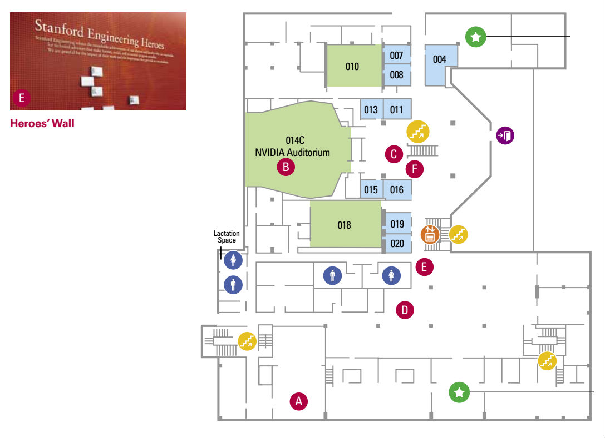
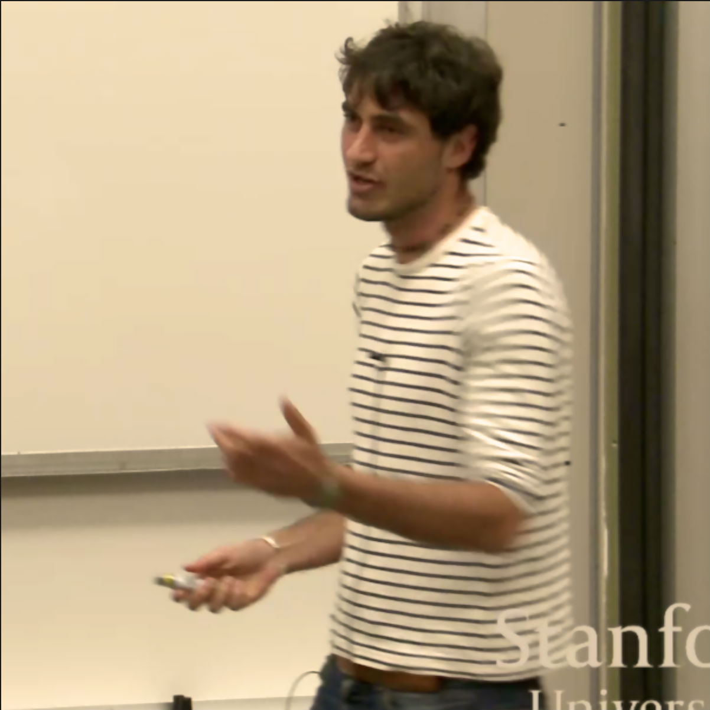
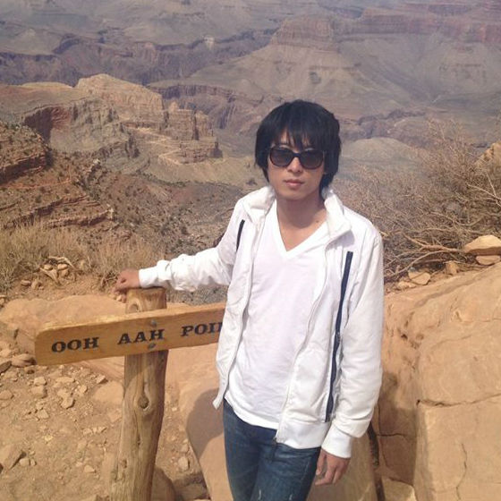

Office Hour Location
All office hours (except Chris') are going to be held in the basement of Huang in the work area infront of the Heroes' Wall. Some office hours are also online. Online office hours will be hosted in Huang and we encourage on campus students to go visit them -- in addition to being in person there will also be a link (see Piazza) that allows SCPD students to ask questions.


Lecturer: Chris Piech
piech@cs.stanford
Thurs 1-3pm
Gates 193
Head TA: Ben Ulmer
ulmerb@stanford
Th 1:30p, 240-202
Fri 1:30p, 80-113
TA: Ana-Maria Istrate
aistrate@stanford
Wed 4:30p 200-032
Wed 6:00p 240-201
TA: Gobi Dasu
gdasu@stanford
Wed 4:30p, 60-107
Th 4:30p, 200-032
TA: Julia Daniel
cs-jdaniel@stanford
Th 10:30a, 540-103
Th 1:30p, 200-124
TA: Luke Johnston
lukej@stanford
Th 10:30a, 240-202
Th 6:00p, 240-201
TA: Elliot Chartock
elboy@stanford
Th 1:30p, 200-230
Th 3:00p, 240-201
TA: Eric Redondo
eredondo@stanford
Fri 1:30p, 240-201

TA: Yuling Liu
yulingl@stanford
Wed 4:30p, 200-230
Wed 6:00p, 200-032
TA: Brendan Corcoran
bmc2016@stanford
Th 4:30p, 240-201
Th 3:00p, 200-124